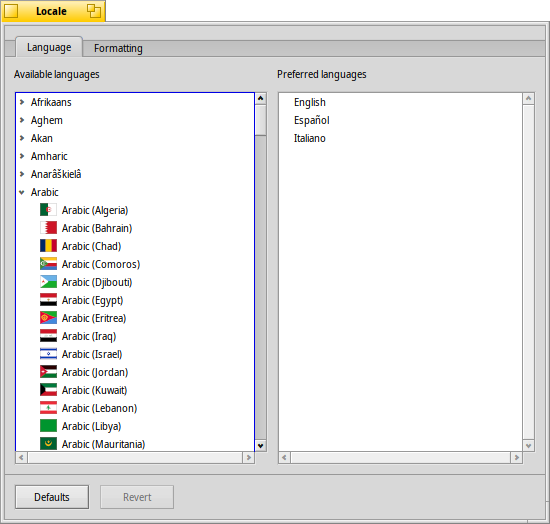
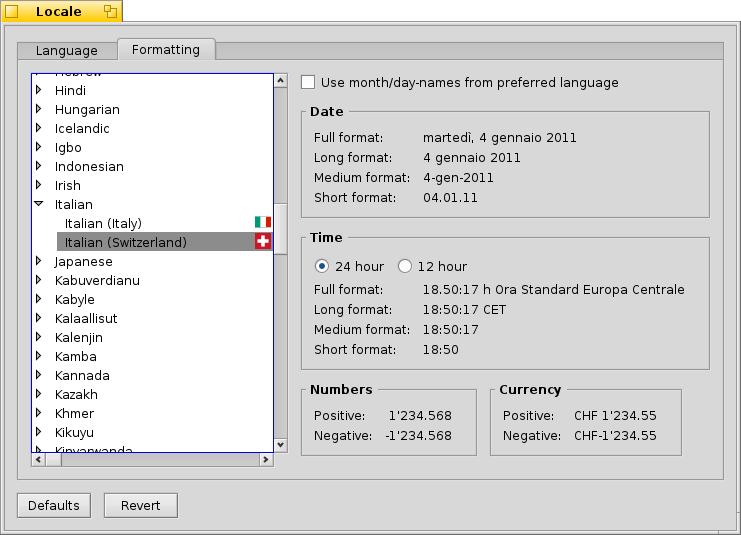

English
English Français
Français Deutsch
Deutsch Italiano
Italiano Русский
Русский Español
Español Svensk
Svensk 日本語
日本語 Українська
Українська 中文 ［中文］
中文 ［中文］ Português
PortuguêsLocale
 Locale
Locale
| Deskbar: | ||
| Location: | /boot/system/preferences/Locale | |
| Settings: | ~/config/settings/Locale settings |
The Locale Kit provides a set of tools for internationalizing, localizing and translating software. This includes not only replacing string with their translations at runtime, but also more complex tasks such as formatting numbers, dates, and times in a way that match the locale preferences of the user.
Currently there are more than 50 translations available for Haiku OS and applications. Unfortunately, some of them were not yet fully translated. For this reason, you can choose more than one language for “Preferred languages” category. Translated interface will be based on descending order of languages set up on this page. English is, by default, always active (also when not listed). In this example, language is set to Spanish.
On the Formatting tab you can set up date and time preferences, like 12/24 hour clock or translation of day/month names to desired language. The list on the left contains some default preferences for supported languages. In this example, formatting preferences are set to Spanish (Spain).
To apply the changes, close the Locale and reboot your system.